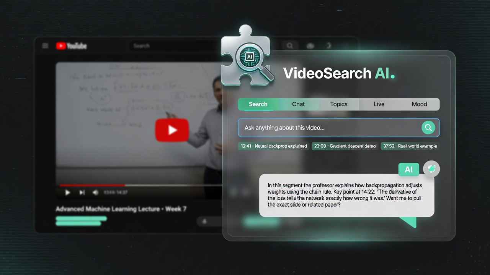

Semantic search
Type natural language. MiniLM embeddings rank the moments that match meaning — not just keywords.
Works offline after indexVideoSearch AI indexes YouTube captions on your machine, finds moments by meaning, chats with the video (RAG), and jumps the player to the exact second.
…we minimize the loss by stepping opposite the gradient…
…learning rate schedules prevent overshooting minima…
…batch vs stochastic updates in practice…
Built for lectures, podcasts, interviews, and deep tutorials — where the answer is spoken, not written in the title.
Type natural language. MiniLM embeddings rank the moments that match meaning — not just keywords.
Works offline after indexAsk multi-turn questions. We retrieve caption chunks, call your LLM, and cite clickable timestamps.
Groq / OpenAI-compatibleOfficial YouTube chapters first, then AI or local topics — jump into the right section instantly.
Long videos · 15–30+ topicsFull caption list synced to playback. Click any line to seek. Follow mode keeps you oriented.
Always on-deviceSee what viewers praise or criticize — good / mixed / bad split, themes, and sample comments.
On-device DistilBERTCompact mint pill on the video. Expand for Search, Chat, Topics, Live, Mood, and Settings.
Doesn’t break YouTube layoutA floating glass panel that feels native: search moments, chat with the lecture, read the room.

A full local-first stack from captions to answers — no VideoSearch cloud account.
Fetch native timedtext tracks via YouTube Innertube (manual preferred over ASR).
Sentence-aware windows embedded with MiniLM in WASM — stays on your device.
Cosine + keyword hybrid for moments; RAG retrieves context for Chat answers.
Reliable seek into the player. Click times in answers, sources, topics, or live lines.
Load unpacked from the open-source build today. Chrome Web Store listing can point here once published.
dist/ folder.
chrome://extensions and enable Developer mode.
dist/ directory — not the repo root.
Your transcripts and embeddings stay in the browser. You control optional LLM calls.
Captions are chunked and embedded with MiniLM in WASM. Indexes live in IndexedDB on youtube.com.
No product login, no sync server, no analytics backend in the extension pipeline.
Chat, Ask, and smart topics use your key (e.g. Groq) when you enable Settings. Search works without it.
After a video is indexed, semantic search, topics (local), live transcript, and seeks work offline. Chat/Ask need network for the LLM API. The embedding model may download once from Hugging Face CDN.
Not for search. For Chat with Video (RAG), Ask prose answers, and optional AI topic labels, paste an OpenAI-compatible key in Settings (Groq is the default endpoint).
YouTube watch pages with captions (manual or auto). Native language tracks are preferred; AI answers stay in English.
The product is open source on GitHub and loads as an unpacked Manifest V3 extension. A store listing can link from this page when you publish.
github.com/Kadiwalhussain/VideoSearch — clone, build, contribute.
Install VideoSearch AI and turn every long YouTube video into something you can search, chat with, and navigate by meaning.